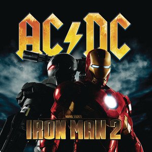
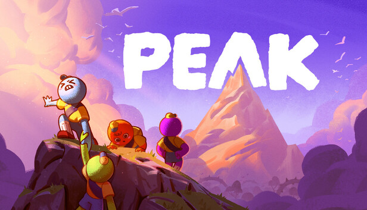

Filmes e Séries
Gravity Falls

Fonte: Disney+
A série Gravity Falls: Um Verão de Mistérios acompanha os gêmeos de 12 anos Dipper e Mabel Pines, que são enviados para passar as férias de verão com seu tio-avô Stan na aparente pacata e misteriosa cidade de Gravity Falls, no Oregon.
Guardiões da Galáxia

Fonte: Disney+
O filme Guardiões da Galáxia Vol. 2 (2017) acompanha a equipe de heróis em uma nova jornada espacial enquanto Peter Quill (Senhor das Estrelas) descobre a verdade sobre a sua origem e a sua família.
Parede de Gelo

Fonte: Netflix
Parede de Gelo (Koori no Jouheki) é um aclamado anime de drama e comédia romântica escolar focado no amadurecimento e na superação de barreiras emocionais. Produzida pelo Studio KAI e transmitida pela Netflix, a animação é baseada no popular web mangá de Kōcha Agasawa.
Música e Podcasts
Kizuna No Kiseki - MAN WITH A MISSION e Milet

Fonte: LETRAS.MUS.BR
Kizuna No Kiseki é uma música gravada pela banda de rock japonesa MAN WITH A MISSION com a cantora milet. Também muito conhecida por ser o tema de abertura da 3ª temporada do anime Demon Slayer: Kimetsu no Yaiba.
Fire and the Flood - Vance Joy

Fonte: LETRAS.MUS.BR
"Fire and the Flood", de Vance Joy, é uma faixa indie folk que retrata a intensidade persistente e avassaladora de um amor marcante. A letra utiliza o fogo e a inundação como metáforas para um sentimento simultaneamente caloroso, sufocante e difícil de esquecer.
Thunderstruck - AC/DC

Fonte: LETRAS.MUS.BR
"Thunderstruck" é um dos maiores clássicos da banda australiana AC/DC, lançado em 10 de setembro de 1990 como o single principal do álbum The Razors Edge.
Games e Tecnologia
PEAK

Fonte: Steam
PEAK é um jogo cooperativo de sobrevivência e escalada lançado em 2025 pela Landfall e Aggro Crab. No comando de escoteiros perdidos em uma ilha misteriosa, os jogadores devem cooperar para escalar uma montanha gigante que muda de formato a cada 24 horas.
LEGO Indiana Jones

Fonte:XBOX 360
Lego Indiana Jones reconta os três primeiros filmes do herói em forma de blocos de montar e humor mudo. O jogador controla Indy e seus aliados para resolver quebra-cabeças, coletar pecinhas e usar o chicote para avançar por dezoito fases cheias de ação e exploração leve, ideal para jogar em dupla.
Kung Fu Panda

Fonte:XBOX 360
Kung Fu Panda é um jogo de ação e aventura baseado no filme de animação da DreamWorks. O jogador assume o papel de Po, enquanto ele treina para se tornar um mestre do kung fu e enfrenta inimigos em uma jornada épica.